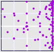
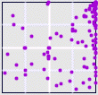

|
|  |
| Equity Market Neutral |
|
|
|  |
| Event Driven Strategy |
|
|
| Data for Tremont/CSFB hedge fund returns are available only monthly, and
for less than the last ten years, so the driven IFS have only about a hundred points. |
| Hedge funds strive to produce returns independent of market forces. For these
examples, this reveals itself through most points lying along the line
connecting corners 2 and 4, signaling that the funds go up regardless of the activity
of the Dow. |
| Both the Fixed Income and Equity Market Neutral strategies operate by finding
almost identical securities that are not efficiently priced, holding the cheaper and
selling the more expensive short. In this way, they hedge out the market risk and
produce a reliable return. |
| Long/Short Equity strategies show more co-movement with the Dow. They operate
by holding securities they see as undervalued and selling short those they see as
overvalued. These perceptions can be sensitive to market activity, so we see some
indication of a trend along the diagonal between corners 1 and 4. |
| Event Driven Strategies focus on mergers,
holding long the targets of mergers and selling short the acquirers.
In a climate of few mergers, this strategy holds its funds idle. Historically, mergers are
more common in a strong economy, so here, too, we expect the correlation between
the find and the Dow revealed through the (faint) diagonal trend. |